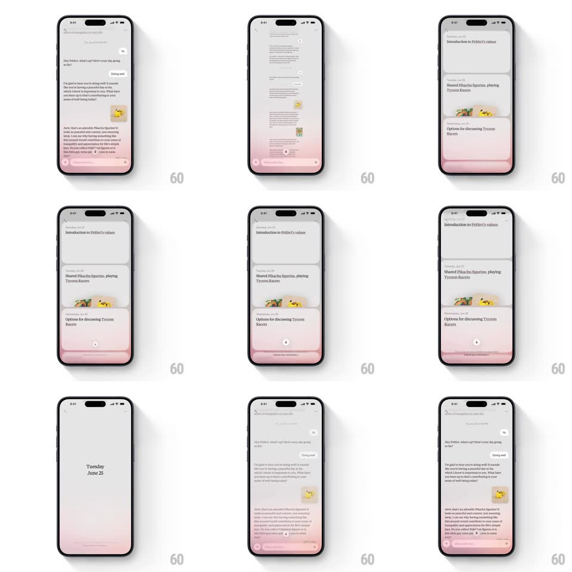

Media
Frame-by-frame

Rebuild this interaction 1:1: Dot's pinch-to-shrink - pinching out on a journal conversation collapses it into a stacked deck of summary cards, then further into a single dated entry, and pinching in expands it back to the full thread.

Rebuild this interaction 1:1: Dot's pinch-to-shrink - pinching out on a journal conversation collapses it into a stacked deck of summary cards, then further into a single dated entry, and pinching in expands it back to the full thread.
## Integration
Integration: stack-agnostic spec - springs given as stiffness/damping, timed motions as duration + curve; map every value to your framework and animation library of choice.
## Scene
Soft pink-gradient journal chat: a conversation thread ("Hey Prithvi, what's up?", "Doing well", long reflective entries with a small photo). Pinch level 2: a deck of stacked summary cards ("Introduction to Prithvi's values", "Shared Pikachu figurine, playing Tycoon Racers", "Options for discussing Tycoon Racers") with card edges peeking. Pinch level 3: a single centered date card ("Tuesday June 25"). The pink gradient wash and a floating action pill persist at the bottom throughout.
## Motion spec
Pattern: semantic zoom via pinch, gesture-driven.
- Pinch out: the thread scales down and folds into the top summary card (content blurs 8px as it shrinks, gesture-tracked); remaining cards stack behind with 10px offsets and slight rotation (+-2deg).
- Commit: on release, the deck snaps to a settled fan (spring ~320/24) - front card full, two behind peeking.
- Deeper pinch: the deck collapses into the single date card (300ms, ease-in-out), cards converging center.
- Pinch in: reverses exactly - date card splits back into the deck, then the deck unfolds into the live thread (300ms), content sharpening as it grows.
## Calibration
- Zoom levels are discrete states; the gesture scrubs between them and springs to the nearest.
- The bottom gradient and action pill never scale - only the content layer zooms.
## Reduced motion
Levels crossfade (250ms); no pinch scrub.
## Don't miss
- Card stack edges show real content previews (titles + tiny thumbnails), not blank rectangles.
- The date card is minimal: just weekday and date, centered, no chrome.